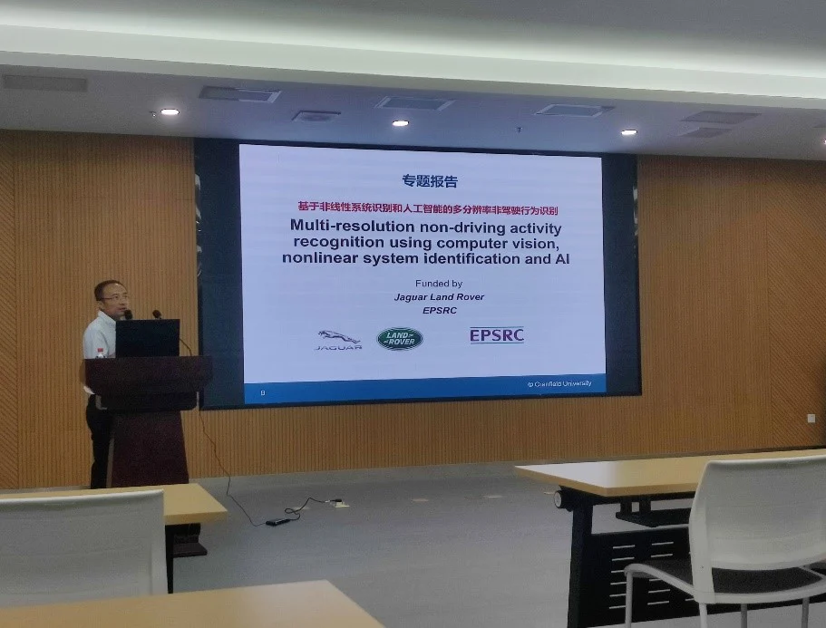
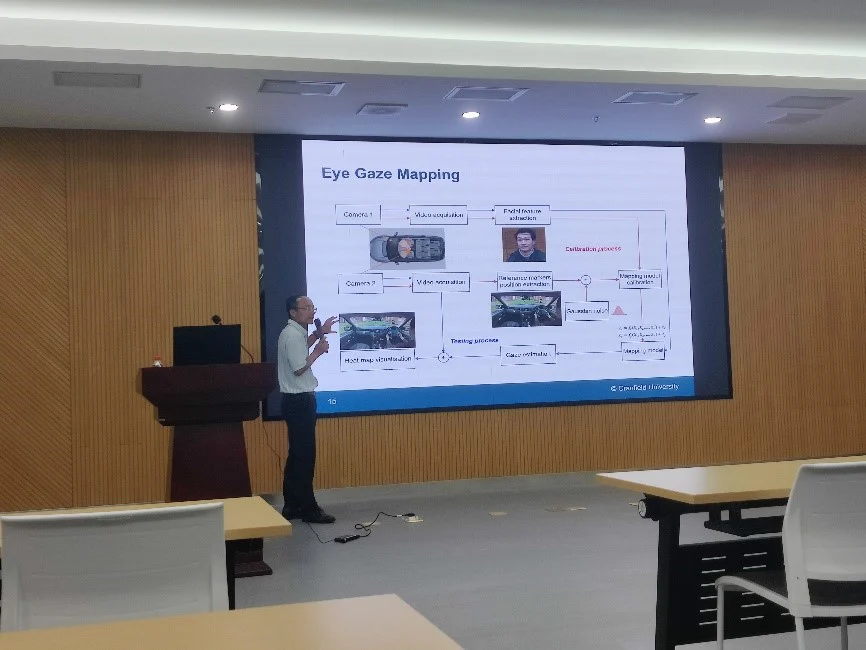
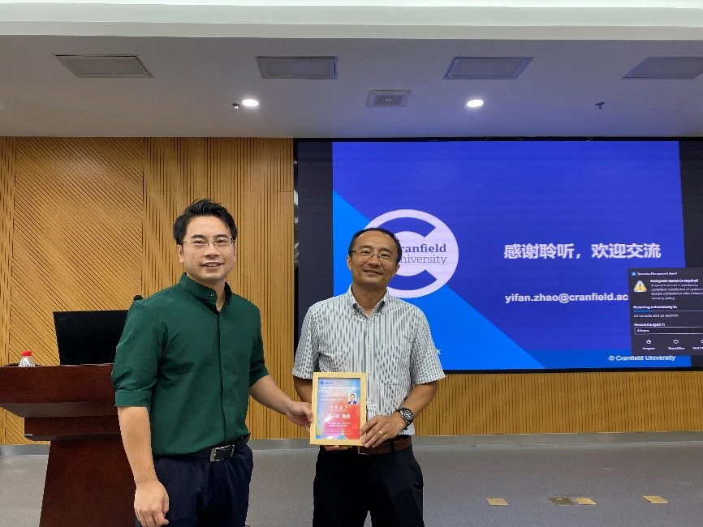

2023年8月15日，iMED团队邀请到了英国克兰菲尔德大学的赵一帆教授为同学们进行基于非线性系统识别和人工智能的多分辨率非驾驶行为识别的专题学术分享，本次会议由赵一天研究员主持。
赵一帆博士现任英国克兰菲尔德大学（Crantield University）教授、博士生导师，Through-life Engineering Services实验室主任、英国高等教育学会（HEA）会士、中国医科大学客座教授；长期从事计算机视觉、人工智能、模式识别、非线性系统识别以及信号处理等数据科学方向研究，在国际SCI学术期刊发表杂志论文逾200篇，其中逾40篇发表在IEEE Transaction等国际顶级学术期刊；领导、参与多项英国工程与自然研究理事会（EPSRC）、皇家工程院、Innovate UK， BEIS以及Lloyd Registration Foundation重大科研项目，经费总额逾7百万英镑人民币；2023年获得英国皇家工程院工业基金。

赵一帆教授首先介绍了他们如何将各项基础研究成果应用于工业无损探伤、自动驾驶、智慧工地、脑电波信号分析、智能医疗、以及医学图像处理等方向。例如，通过数字孪生的方法对工地环境建模，实现工地场景下的节能减排以及产能提高；融合了多传感器数据，搭建神经网络对驾驶人员是否适合驾驶行为进行判断以及对车辆的可信任度进行评估；此外，赵教授还介绍了他们开发的可以对裂缝位置以及方向进行无损探测的相关工作，让同学们对于人工智能的应用场景有了进一步的认知。

随后，赵教授着重了介绍了他们在多分辨率非驾驶行为识别方面的研究工作，方法框架包括三个组成部分：凝视映射、目标检测和NDA分类器。驾驶员的凝视点由双摄像头系统估计。前置摄像头用于捕捉和提取驾驶员的面部特征，这些特征用于估计凝视信息并映射到后置摄像头的场景中，并通过热图进行可视化；在后置摄像头的场景中估计的凝视位置有助于定义对象识别的感兴趣区域（ROI），从而显著减少识别时间并提高准确性和成功率；目标检测结果显示了每个对象的标签、置信度得分和位置，以对象掩码列表的形式表示；采用滑动时间窗口技术构建了一个新颖的NDA分类器，通过考虑眼球注视位置和识别的对象掩码的历史信息进行决策。另外，赵教授还介绍到通过FlowNet从视频中提取运动信息进一步提高了决策的准确率。

赵教授的报告激发了在场同学们的热烈讨论，大家向赵教授请教了关于视频数据的一些预处理方法，以及如何更好地挖掘、利用视频数据在时序上的特征，赵教授对此做出了详细的解答。通过本次讲座，同学们对于自动驾驶领域和视频分析技术有了更加深入的了解，也进一步激发了iMED全体人员的科研兴趣和探索精神，我们将会在人工智能赋能医疗的道路上继续努力前行！